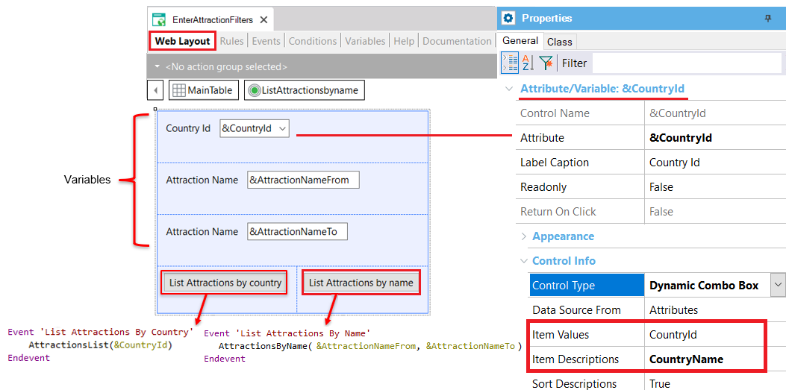
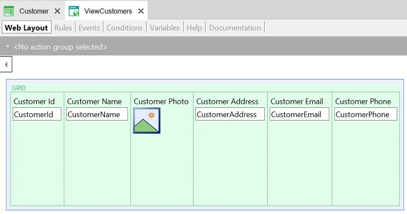
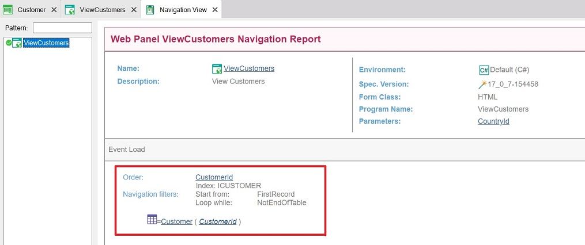
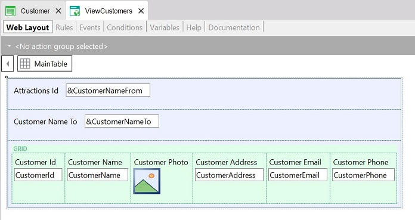
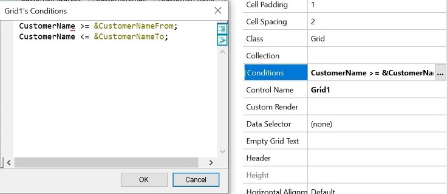

Defines a web application UI screen.
The main purpose of this GeneXus object is to define interactive queries to the database; however, it is a very flexible object that lends itself to multiple uses.
It allows end users to interactively query the database at runtime through a screen. The term "interactively" refers to end users being able to repeatedly enter different filter values through a Web Panel screen, and then query the data that match them. End users can also perform different actions on the queried data.
Web Panels don't allow updating the database; they only allow for queries (unless they're used in combination with Business Components).
Every Web Panel has an associated screen (Web Layout) where the attributes included will be queried/retrieved from the database and displayed (read-only). The variables included will be entry variables.
The following classification describes the possible uses of Web Panels:
This classification is independent of GeneXus; that is, GeneXus does not classify Web Panels internally.
A Web Panel object has several sections that can be defined:
| Web Layout | Defines the screen of the Web Panel, which the analyst designs by adding variables, attributes, and other controls, in order to allow end users to interact with it. |
| Rules | Define specific behaviors of said object to be defined. For example, specifying what parameters it receives, defining what variables you don't want to be accepted on the screen but rather used for displaying information, etc. |
| Events | Web Panels use event-driven programming. This kind of programming allows you to define idle code, which is activated in response to certain actions by the end user or the system. |
| Conditions | In this section, you can define conditions to be matched by the data to be retrieved (filters). There is another option to define filters locally in each Grid control included in the Web Layout. |
Like most objects, it also has a section for defining variables (as usual, local to the object), the object's Help and Documentation as well as a Properties editor that allows you to set up general aspects of the object.
The following Web Panel includes variables and buttons in its Web Layout. The variables are enabled for the end user to assign values to them. This means they are input controls; in other words, they are not read-only.

Specifically, the &CountryId variable has been set of the Dynamic Combo Box Control Type; it has been set to show all the CountryName values stored in the COUNTRY table and the end user can select one. The CountryId corresponding to the CountryName selected by the end user will be kept in the &CountryId variable. After pressing the button “List Attractions by country,” the associated event will be executed invoking the PDF file containing the list of attractions in that country.
The variables &AttractionNameFrom and &AttractionNameTo allow entering a range of attraction names. After pressing the button “List Attractions by name,” the PDF list will show the attractions within the range received by parameter.
Considering the following Customer Transaction object structure:
Customer
{
CustomerId*
CustomerName
CustomerPhoto
CustomerAddress
CustomerEmail
CustomerPhone
}
The ViewCustomers Web Panel was defined including only Attributes in its Web Layout to display information. The attributes present in a Web Layout are always Read Only.

In this example, the attributes are included in a Grid control. So, the Grid Control has a Base Table. In other words, GeneXus takes into account those attributes to determine a database table to be navigated and to load its records in the Grid.
If you look at the Navigation View of this Web Panel you will see the following:

This Navigation View shows that the table being navigated is Customer. It is scanned ordered by CustomerId because it is the Customer table Primary key.
It is also possible to define a Display Web Panel without a Grid. You can insert attributes directly in the Web Layout and GeneXus will analyze them and will determine the base table to be navigated. In general, this kind of Web Panel receives the primary key as a parameter (using the Parm rule) to filter a specific record and show its data.
Consider the same Web Panel shown in the second example. Besides containing the Grid with attributes, it also contains variables in the Web Layout fixed part.

Variables allow end users to enter values for them. So, this Web Panel contains variables (that are editable) and attributes (that are read-only).
The variables are located in the fixed part of the Web Layout and the attributes are included inside the Grid.
The Grid navigates all the Customer table records and loads their data as rows in the Grid. To show in the grid only those records whose customer names are included in the range entered by the end user in the variables, you only have to define the Grid Conditions:
CustomerName >= &CustomerNameFrom; CustomerName <= &CustomerNameTo;
Look at the following image that shows the Grid Conditions defined:

This is an interactive query.
Generators: Java, ..NET, .NET Framework